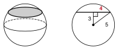
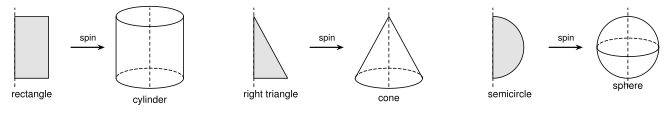
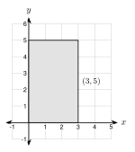

8.2 Cross Sections and Solids of Revolution
- Name solids and count their faces, edges, and vertices
- Describe the cross section made when a plane slices a solid
- Tell which solid a flat shape makes when it spins
- Find lengths in a cross section or a solid of revolution
Warm-Up
1. 25 π
2. √(36 + 64) = 10
3. x − 4 = 2, so x = 6
8.2.1Solids
- A solid is a three-dimensional shape.
- A polyhedron has only flat faces. Prisms and pyramids are polyhedrons.
- A face is a flat surface. An edge is where two faces meet. A vertex is a corner.
- A prism has two parallel bases that are the same shape. A pyramid has one base and triangle faces that meet at a point.


Name: triangular prism
Faces: 5 (2 triangles, 3 rectangles)
Vertices: 6 Edges: 9
Name: square pyramid
Faces: 5 Vertices: 5 Edges: 8
| Solid | Faces F | Vertices V | Edges E | F + V − E |
|---|---|---|---|---|
| cube | 6 | 8 | 12 | 2 |
| triangular prism | 5 | 6 | 9 | 2 |
| square pyramid | 5 | 5 | 8 | 2 |
| pentagonal prism | 7 | 10 | 15 | 2 |
Euler's formula (no holes): F + V − E = 2
9 + 14 − E = 2, so 23 − E = 2, so E = 21
8 + 12 − E = 2, so E = 18
8.2.2Cross Sections

A: square B: rectangle C: triangle D: hexagon
Is every slice of a cube a square? Explain with one slice. No. B is a rectangle that is not a square.

1: circle 2: rectangle 3: circle 4: triangle
Every cut of a sphere is a circle.
Parallel to the base: a square. Straight down through the apex: a triangle.

r2 + 32 = 52
r2 = 16, so r = 4
A = πr2 = 16 π ≈ 50.3 square inches
r2 + 52 = 132, so r2 = 144 and r = 12.
A = 144 π ≈ 452.4 square centimeters.
Parallel to the ends: circle At a slant: ellipse (an oval)
A circle.
8.2.3Solids of Revolution

| Flat shape | Spin around | Solid |
|---|---|---|
| rectangle | one side | cylinder |
| right triangle | one leg | cone |
| semicircle | its diameter | sphere |

Solid: cylinder
Radius r = 3 Height h = 5
A cylinder with r = 5 and h = 3.

Solid: cone r = 4 h = 6
ℓ2 = 42 + 62 = 52
ℓ = √52 = 2√13 ≈ 7.2
r = 5, h = 12. ℓ2 = 25 + 144 = 169, so ℓ = 13.
1. The flat shape made by slicing a solid is a cross section.
2. Every slice of a sphere is a circle. A slice of a cone through its apex is a triangle.
3. Euler: F + V − E = 2, where E counts edges.
4. A shape spins around an axis. A semicircle makes a sphere.
Practice
Name Each Solid
1. It has two parallel circular bases and one curved surface. cylinder
2. It has five faces: one square and four triangles. square pyramid
3. It has one circular base and one point (apex). cone
Faces, Vertices, and Edges
4. A rectangular prism has how many faces, vertices, and edges? 6, 8, 12
5. A hexagonal prism has how many faces, vertices, and edges? 8, 12, 18
6. A polyhedron has 10 faces and 16 vertices. How many edges does it have?
10 + 16 − E = 2, so E = 24
7. A polyhedron has 12 edges and 7 vertices. How many faces does it have?
F + 7 − 12 = 2, so F = 7
8. A student draws a solid with 5 faces, 6 vertices, and 10 edges. Use F + V − E to show that no polyhedron with no holes has these numbers.
5 + 6 − 10 = 1, not 2.
Cross Sections

9. Prism 1 is cut parallel to its ends. Cross section? rectangle
10. Prism 2 is cut parallel to its triangle ends. Cross section? triangle
11. A cylinder is cut parallel to its bases. circle
12. A cylinder is cut straight through its axis. rectangle
13. A cone is cut parallel to its base. circle
14. A cone is cut through its apex and the center of its base. triangle
15. Thu says, "Every slice of a cube is a square." Give one slice of a cube that is not a square.
A slice through two opposite edges is a rectangle that is not a square. A slice across a corner is a triangle.
16. A sphere has radius 10 in. A plane cuts it 6 in from the center. Find the area of the cross section. Give the exact answer and a decimal rounded to the nearest tenth.
r2 = 100 − 36 = 64, r = 8. A = 64 π ≈ 201.1 square inches
17. A sphere has radius 25 cm. A plane cuts it 24 cm from the center. Find the area of the cross section. Give the exact answer and a decimal rounded to the nearest tenth.
r2 = 625 − 576 = 49, r = 7. A = 49 π ≈ 153.9 square centimeters
18. A cylinder has radius 4 ft and height 10 ft. It is cut straight through its axis. Find the area of the rectangle that you see.
Width = 2 · 4 = 8. Area = 8 · 10 = 80 square feet
Solids of Revolution
19. A rectangle with vertices (0, 0), (4, 0), (4, 7), (0, 7) spins around the y-axis. Name the solid. Give its radius and height.
cylinder, r = 4, h = 7
20. The same rectangle spins around the x-axis. Name the solid. Give its radius and height.
cylinder, r = 7, h = 4
21. A triangle with vertices (0, 0), (3, 0), (0, 4) spins around the y-axis. Name the solid. Give its radius, height, and slant height.
cone, r = 3, h = 4, ℓ = √(9 + 16) = 5
22. The same triangle spins around the x-axis. Name the solid. Give its radius, height, and slant height.
cone, r = 4, h = 3, ℓ = 5
23. A semicircle with radius 6 cm spins around its diameter. What solid does it make? What is the radius of the solid?
A sphere with radius 6 cm.
24. Which flat shape spins to make each object? (a) a soup can (b) a party hat (c) a basketball
(a) rectangle (b) right triangle (c) semicircle
Real Situations
25. Fatima cuts a round loaf of bread (a cylinder lying on its side) straight across, at a right angle to its length. What shape is each slice?
A circle.
26. An orange is a sphere with radius 4 cm. Daniel cuts it through its center. Find the area of the cut face. Give the exact answer and a decimal rounded to the nearest tenth.
A = π(4)2 = 16 π ≈ 50.3 square centimeters
Test Practice
A. a cone with radius 12 in and height 5 in
B. a cone with radius 5 in and height 12 in ← correct
C. a cylinder with radius 5 in and height 12 in
D. a sphere with radius 5 in
A. It is a triangle.
B. It is a rectangle.
C. It is a circle smaller than the base. ← correct
D. It is a circle the same size as the base.
Challenge
Edges: 12 · 5 ÷ 2 = 30. Vertices: 12 + V − 30 = 2, so V = 20.
6. Each side of the hexagon lies in one face, and there are 6 sides.